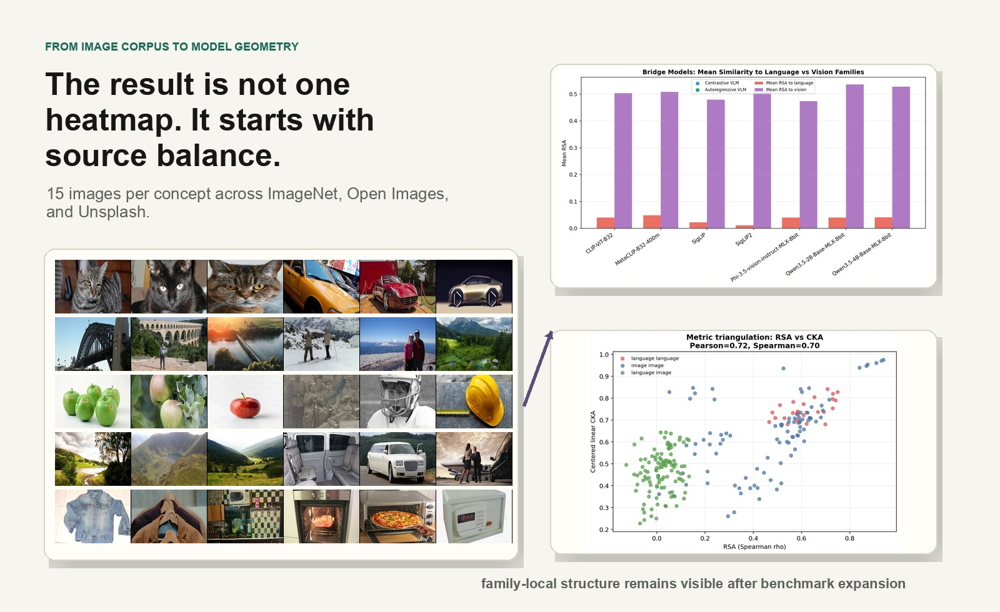

Independent exploratory ML study
Cross-Modal Representation Geometry
Holding the model panel constant, expanding the benchmark from 20 to 250 concepts reduced measured language–image similarity from 0.2418 to 0.0199.

Primary result
Benchmark scope changed the cross-modal conclusion.
On an earlier 20-concept benchmark, the same model panel appeared to show meaningful language–image convergence. After expanding to a source-balanced 250-concept benchmark, that estimate fell by an order of magnitude while within-family structure remained strong.
- Language–image RSA:
0.2418 → 0.0199with the model roster held constant. - Language–language RSA:
0.6143; all 28 pairs survived FDR correction. - Vision–vision RSA:
0.3827; 43 of 45 pairs survived. - Direct language–vision RSA:
0.0155; only 15 of 80 pairs survived. - Contrastive VLMs aligned
0.5003with vision versus0.0308with language. - Autoregressive VLMs showed the same pattern:
0.5122to vision versus0.0404to language.
Independent, solo-authored exploratory work run locally on an M1 Pro. It has not been peer reviewed. The public release includes code, manifests, checksums, smoke fixtures, and manuscript-facing outputs; large compiled artifacts remain indexed but do not yet have public download URLs.

The result begins with source balance: 250 concrete concepts, 3,750 images, and a heterogeneous panel of language, vision, and multimodal models.


Measurement
Comparing geometry, not raw coordinates.
Each model turns the same concepts into a representational similarity matrix. Spearman RSA then compares the structure of those matrices without requiring their embedding coordinates or dimensions to match.
The result is tested with 300 image-bootstrap draws, 3,000-permutation Mantel tests, FDR correction across 231 core-panel pairs, prompt controls, aligned-depth analysis, quantization probes, and linear CKA as an alternate metric.
Triangulating the result
RSA and linear CKA preserve the same family ordering, with Pearson
0.7229 and Spearman 0.7050 agreement across pairs.
What the final layer misses
The strongest shared structure appears inside the network.
Language–image agreement peaks at the aligned midpoint, while vision-family agreement peaks later and declines at the terminal layer. Final-layer-only analysis can miss the point where shared structure is most visible.
| Dimension | Study design | Evidence boundary |
|---|---|---|
| Dataset | 250 concrete concepts spanning 10 semantic categories, with 15 images per concept from ImageNet, Open Images, and Unsplash. | Abstract concepts and compositionality are outside the final study. |
| Model panel | 8 language models, 10 self-supervised vision models, 4 contrastive VLMs, and 3 autoregressive VLMs. | Language models stop at 4B parameters; the autoregressive extension contains three models. |
| Reproducibility | Canonical manifests, provenance ledgers, reconstruction scripts, checksums, environment specifications, and passing release checks. | Large compiled artifacts are indexed locally but do not yet have public download URLs. |
| Interpretation | The evidence supports family-local convergence and vision-anchored VLM geometry under this extraction regime. | It does not establish a universal account of all multimodal model internals. |